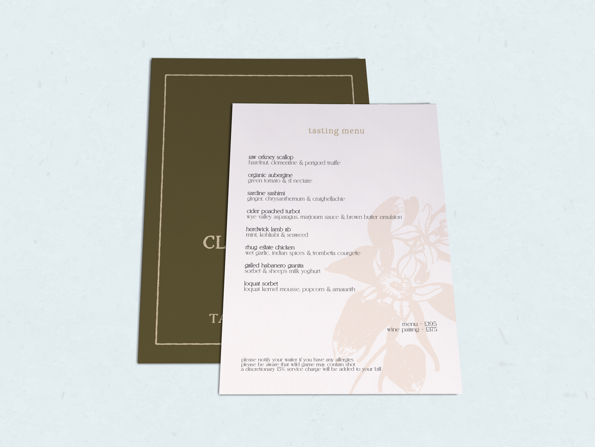
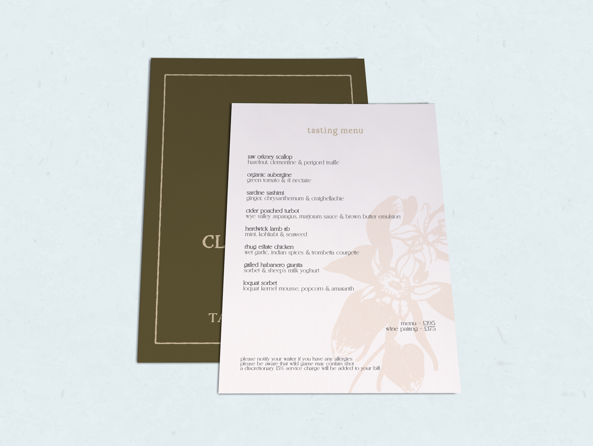
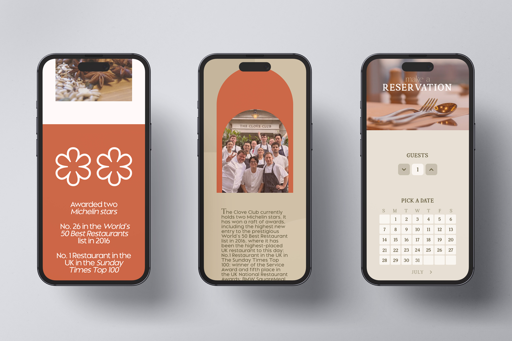
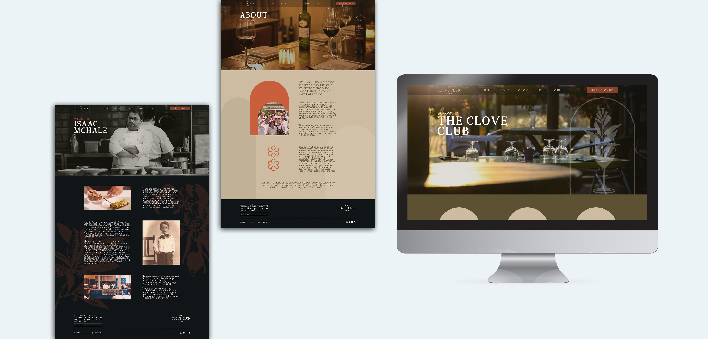
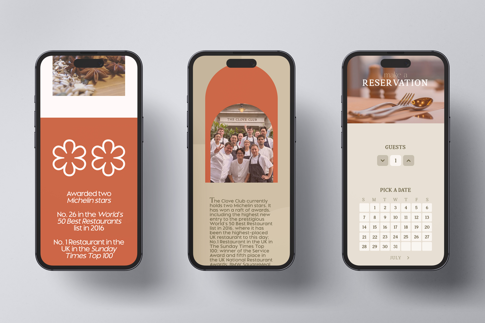
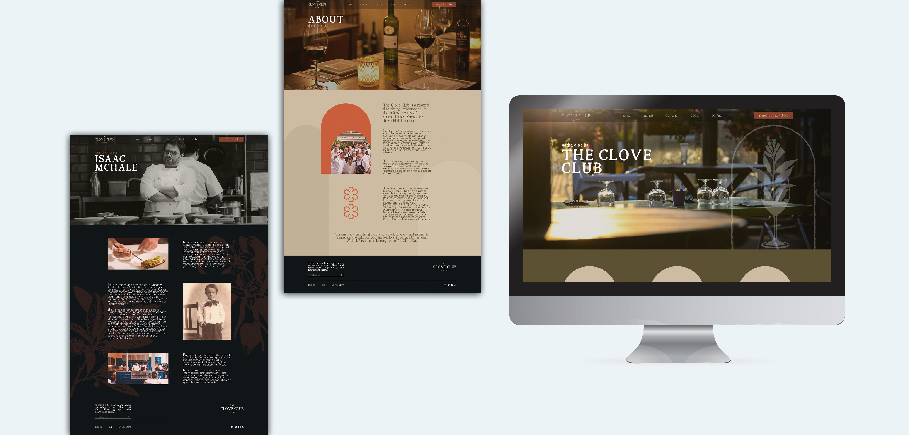

located in london, u.k., the clove club is a distinguished fine dining restaurant, renowned for its innovative approach to contemporary british cuisine. the restaurant combines a relaxed atmosphere with exceptional culinary artistry, which is portrayed by serene and organic graphic elements. the clove club offers a unique and memorable gastronomic journey that reflects the essence of modern dining.
creative director
illustrator, photoshop, figma
2024
brand identity, ui design, prototype, merchandising
primary
submark
secondary
color palette
headlines
subtitles
body
 


 


g&j photo studio

inspire the moon
inspire the moon © 2024